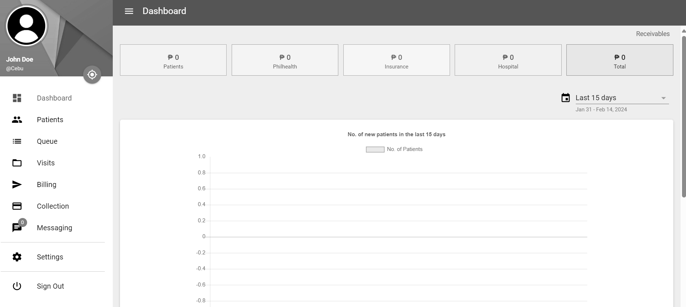
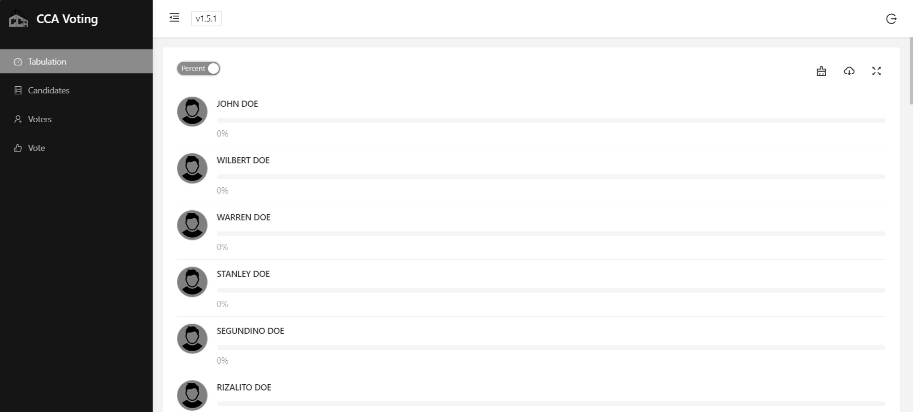
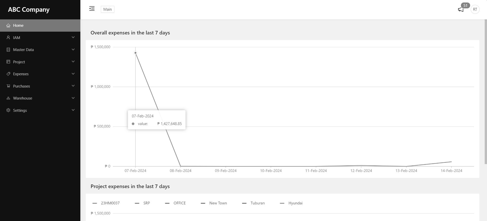
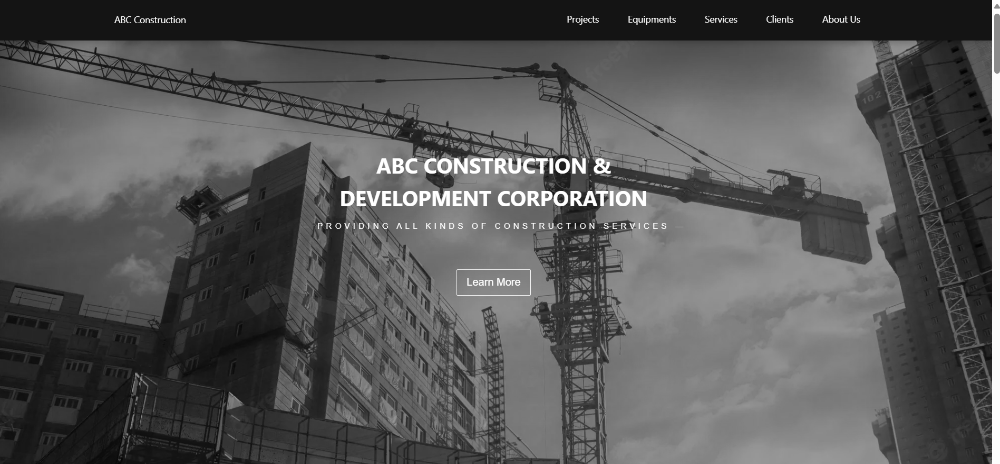
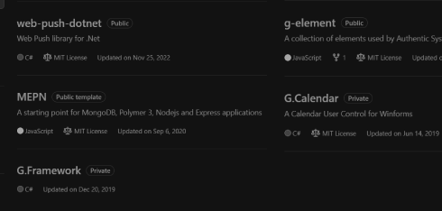

I'm Gabriel Jefferson Boltron, software developer from Cebu, Philippines.
I'm a software developer with expertise in various programming languages such as HTML, CSS, JavaScript, TypeScript, C#, SQL and NoSQL. I have experience in building scalable, secure and reliable web and desktop applications using various frameworks and technologies from scratch. I enjoy solving complex problems and learning new skills. I am passionate about creating high-quality code that follows best practices and industry standards. I am always looking for new challenges and opportunities to grow as a developer.
While I excel in software development and appoach task with a 'can do' attitude, I recognize the need to improve my verbal communication skills. I am attentive and have a keen ability to understand client needs, yet I acknowledge that articulating my thoughts clearly is an area for development. I am eager to find oppurtunities that will allow me to not only refine my programming skills but also enhance my interpersonal skills.
Things I’ve made trying to put my dent in the world.
Over the years, I've worked on a variety of projects and I'm proud of the progress I've made. Some of these projects are open-source, while others aren't. If any of them catch your interest, please don't hesitate to reach out. Working with others is a fantastic way to expand knowledge and skills, and I'm always open to welcome new ideas and feedback.

Electronic Medical Records
Patient and time management web application for doctors. Making medical records paperless and easily managed. Made with Polymer JS and backed with Firebase.



Online Voting System
Designed to streamline and modernize the voting process. Making elections fast, secure and transparent. Made with React JS and backed with Firebase.


Project Management System
Made for construction companies to streamline their projects and help them track their purchases and expenses. Made with React TS and backed with .Net Web API and MongodDb.


Accounting System
Made for small businesses to help them track and manage their sales, expenses and purchases. Made with React TS and backed with .Net Web API and SQL Server.


Website / Landing Page
Search engine optimized websites with messenger integrated. Made only with HTML, CSS and Javascript.



Open-Source Libraries
Reusable components that is available for others to explore, use and contribute to.

Let's Get in Touch: Ways to Connect with Me
Thank you for expressing your interest in reaching out to me. I appreciate your feedback, questions, and suggestions. If you have any job opportunities to discuss, please don't hesitate to email me directly at gabrielboltron@gmail.com. While I strive to respond to all messages within 24 hours, please understand that during busy periods, it may take me a little longer. Alternatively, you can send me a private message on my messenger. Once again, thank you for your interest, and I look forward hearing from you soon!